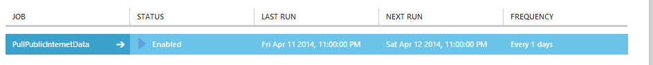

Azure Mobile Services Scheduled Jobs
In this blog post I am continuing with my cross mobile application series that I started here by creating a scheduled job in c# and configuring it in the Azure Portal.
PullPublicInternetDataJob
This class orchestrates the execution of the job and is what Azure Mobile Services calls. The naming of this class is important as this is tied to the configuration in Azure.
Initialization / Disposal
It makes sense that scheduled jobs do not necessarily interact with the database, so unlike the controllers scheduled jobs do not have a dependency on the DataContext. However, in our case we do in fact want to update the database. Simple enough really.
private DataVicContext _context;
protected override void Initialize( ScheduledJobDescriptor scheduledJobDescriptor, CancellationToken cancellationToken)
{
base.Initialize(scheduledJobDescriptor, cancellationToken);
_context = new DataVicContext(Services.Settings.Name.Replace('-' , '_'));
}
And the tidy-up code.
protected override void Dispose(bool disposing)
{
if (disposing)
{
GC.SuppressFinalize( this);
}
_context.Dispose();
base.Dispose(disposing);
}
The rest of the work happens inside the ExecuteAsync method.
Pulling Down the Data
Initially I pull down the data using the following method.
private static Task< byte[]> GetPublicInternetData()
{
Uri dataLocation = new Uri(CloudConfigurationManager .GetSetting("PublicInternetLocationsUrl"),
UriKind.Absolute);
using ( WebClient client = new WebClient())
{
return client.DownloadDataTaskAsync(dataLocation);
}
}
As you can see from the code, I am using a configuration value I have defined in the Azure Mobile Services configuration tab for the URL in which to download from. After receiving the data I perform a check to ensure that I got something back.
Once it has that CSV file it needs to parse, and then graft into the correct format so that it can be inserted into the database. Since the CSV file does not contain any geo-coordinates we will need to ask the Bing Maps API for those co-ordinates before inserting anything in the database.
Clearing the Existing Data
Since this is just a proof of concept I went for the quick and the dirty. You could probably write something more sophisticated in terms of checking if the data has changed before removing a record if you wanted to. Since Entity Framework isn't really meant for bulk operations I'm again cheating and using some ad-hoc SQL to clear my database.
var clearTask = _context.Database.ExecuteSqlCommandAsync("TRUNCATE TABLE [DataVic].[InternetLocations]");
I got Entity Framework to do this asynchronously so that I can parse the received data and look-up geo-locations while this is going on. The await on this call happens just before the Entity Framework call to submit changes. In reality this task should complete well before the await blocker anyway.
Parsing and Applying Logic to the Data
I am not going to go into too much detail in this section. The actual logic is probably of little interest to you if you are primarily interested in just learning about Azure Mobile Services.
The pseudo-code for essentially what happens is:
- Parse the data into a list of an intermediary type containing raw information. Into the CsvInternetLocation class described below.
- The file is parsed using the CsvHelper library. This library is easy to use and has some pretty decent documentation to boot.
- For each record use the Bing Maps REST API to look up addresses, keeping track of both successful geo-location lookups and failures.
public class CsvInternetLocation
{
public string Title { get; set; }
public string Address2 { get; set; }
public string OtherFacilities { get; set; }
public int PostCode { get; set; }
public string Suburb { get; set; }
}
The mapping I have is a literal mapping of column headings to property names which requires nothing to be set up in CsvHelper.
Given that most people probably aren't all that interested in what happens in regards to the Bing Maps lookup I'm going to write a separate blog post to describe this process.
Logging Failures
CreateInternetLocations either returns an InternetLocation entity or null, the geo-location lookup occurs within this method and it can fail as you need to make a remote call with data that cannot be trusted to be correct. If it returns null then a failure will have been added to the collection. The LocationLookupFailure class simply houses the raw CSV record with its line number. This is a pretty basic implementation and a real world application would probably contain something more sophisticated using a retry pattern or the The Transient Fault Handling Application Block.
List< LocationLookupFailure> failures = new List<LocationLookupFailure >();
var records = locations
.Select((location, i) => CreateInternetLocation(location, i + 1, failures))
.Where(r => r != null).ToList();
if (failures.Count > 0)
{
LogFailures(failures, locations.Count);
}
private class LocationLookupFailure
{
public int Index { get; set; }
public CsvInternetLocation Location { get ; set ; }
}
The call to actually log this data is very simple:
this.Services.Log.Warn(myString);
The Log object exposes the ITraceWriter contract, and mobile services extends with the TraceWriterExtensions class. These extension methods include the usual trace level suspects warn, error, info, and debug.
Saving to the Database
There really is nothing special here. All I do is add the created InternetLocation entities to the context and call SubmitChanges. I also have a try/catch around the SubmitChanges call and log any errors.
Configuring the Job in Azure
You will have noted that the name of the class for the scheduled job that I created was PullPublicInternetDataJob. Inside the Azure Portal on your mobile service page you will see a Scheduler tab. With the free version of Azure Mobile Services you are able to create a single scheduled job. Once you have clicked Create you should see the following dialog:
Give your job the name of the scheduled job class that you created in Visual Studio without the 'Job' postfix. While this dialog will allow you to configure how often you want the job to run it does not include any options in terms of what time to run the job. You can configure this by clicking on the job once it is created.
Initially this job will be disabled and you can either run it once to see that it is working, or enable it immediately. Below I have my scheduled job enabled.

Viewing the Logs
Just jump to the logs tab in order to view the log entries created by the scheduled job (and any other Mobile Services component). Click on the details button at the bottom of the page to see the full log message entry.
And there you have it. Once you publish your service code to Azure you should have a fully functional scheduled job ready to run.